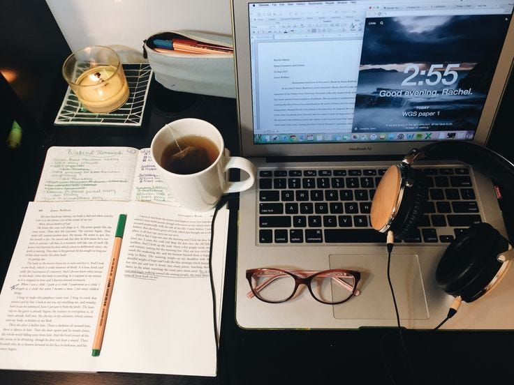

Studying is the process of acquiring knowledge, skills, or understanding through focused attention and practice. It involves engaging with resources like books, lectures, or hands-on activities to enhance comprehension and retain information. Effective study habits include setting clear goals, maintaining a distraction-free environment, and using active learning techniques such as summarization, questioning, or teaching others. Regular breaks, adequate sleep, and consistent review help reinforce what is learned, making the process more productive. Ultimately, studying is not just about memorization but about cultivating critical thinking and problem-solving skills to apply knowledge effectively in real-life situations.